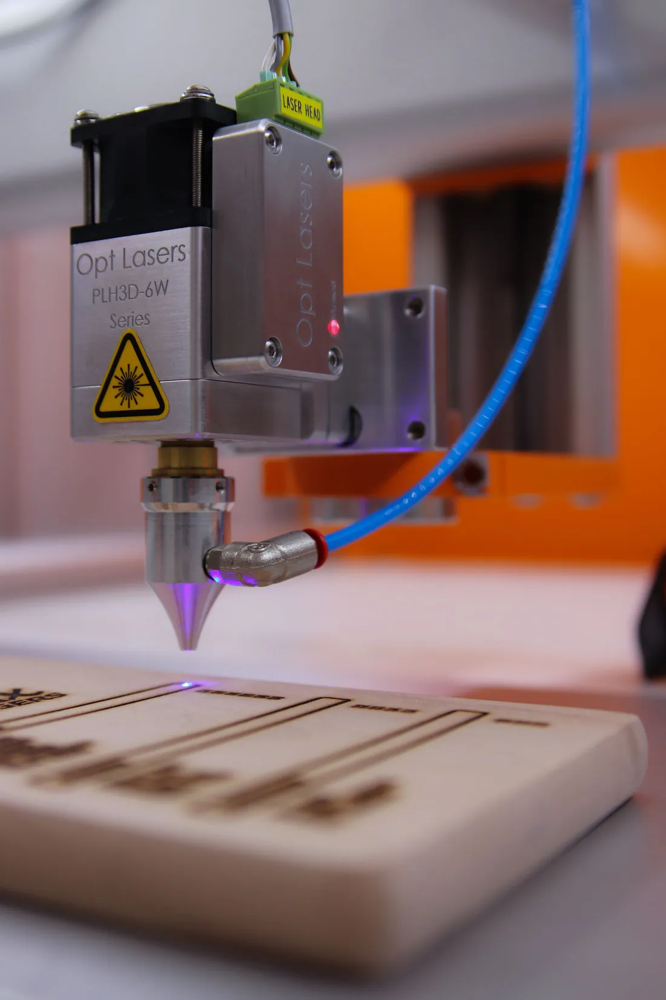

Jasa laser cutting akrilik
Huruf timbul, display, dan plakat dengan tepi bening mengilap.
Akrilik
Laser menghasilkan tepi akrilik yang bening dan mengilap, sehingga potongan dapat langsung dipakai tanpa dipoles. Hasil ini membuat akrilik menjadi pilihan utama untuk signage, display produk, dan plakat.
Akrilik tersedia dalam pilihan bening, susu, dan berwarna. Sebutkan warna dan ketebalan yang Anda inginkan saat meminta penawaran.
Cocok untuk
- Huruf timbul dan neon box
- Display dan stand produk
- Plakat dan trofi
- Papan petunjuk
- Box dan kotak custom
- Hiasan dan suvenir
Spesifikasi
- Ketebalan
- 2–15 mm
- Pilihan
- Bening, susu, dan berwarna
- Format file
- DXF, DWG, CDR, AI, PDF vektor
- Tepi potong
- Bening mengilap, tanpa poles

Layanan lainnya.
Satu pesanan dapat menggabungkan beberapa material dan grafir sekaligus.